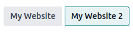

Varios sitios web¶
Odoo le permite crear varios sitios web con la misma base de datos. Esto puede ser útil, por ejemplo, si trabaja con varias marcas en su organización o para crear sitios web separados para diferentes productos, servicios o incluso distintas audiencias. En estos casos, tener distintos sitios web puede ayudar a evitar confusiones, también facilita la adaptación de sus estrategias de alcance digital para que pueda llegar al público correcto.
Puede diseñar y configurar cada sitio web de forma independiente con su propio nombre de dominio, tema, páginas, menús, idiomas, productos, equipo de ventas asignado, etc. También pueden compartir contenido y páginas entre ellos.
Truco
El contenido duplicado (es decir, compartir páginas e información entre varios sitios web) puede tener un impacto negativo para la Optimización de motores de búsqueda (SEO).
Crear un sitio web¶
Siga estos pasos para crear un nuevo sitio web:
Vaya a .
Haga clic en + Nuevo sitio web.

Especifique el nombre y el dominio del sitio web. Cada sitio web debe publicarse bajo su propio dominio.
En caso de ser necesario, realice los ajustes correspondientes en nombre de la empresa, idiomas e idioma predeterminado.
Haga clic en el botón Crear.
Ahora puede empezar a construir su nuevo sitio web.
Nota
De forma predeterminada, todas las aplicaciones que haya instalado relacionadas con Sitio web (por ejemplo, Comercio electrónico, Foro, Blog, etc.) y sus páginas web relacionadas también están disponibles en el nuevo sitio. Puede eliminarlas cuando modifique el menú del sitio web.
Alternar entre sitios web¶
Para alternar entre sitios web, haga clic en el menú junto al botón + Nuevo en la esquina superior derecha y seleccione el sitio web al que desea cambiar.

Nota
Al cambiar de sitio web, se le redirige al otro en la misma página (URL) que el sitio actual. Si la página que está viendo no existe en el otro sitio web, se le redirige a una página de error 404. Una vez allí, haga clic en Crear página.

Configuración específica del sitio web¶
La mayoría de los ajustes de los sitios web son específicos para cada uno de ellos, lo que significa que se pueden habilitar o deshabilitar si es necesario. Para adaptar los ajustes de un sitio web, vaya a . Seleccione el sitio web con el que trabajará en el campo Ajustes de sitio web en la parte superior de la página correspondiente, en el recuadro amarillo. Luego, adapte las opciones para ese sitio web en específico.
Nota
Los sitios web se crean con la configuración predeterminada y esta no se transfiere de un sitio web a otro.
En un entorno multiempresa, cada sitio web puede estar vinculado a una empresa específica en su base de datos para que solo sus datos relacionados (por ejemplo, productos, trabajos, eventos, etc.) aparezcan en el sitio web. Para mostrar datos específicos de la empresa, seleccione la empresa correspondiente en el campo Empresa.
Disponibilidad del contenido¶
Las páginas, productos, eventos y otros que se crearon desde el frontend (mediante el botón + Nuevo) solo están disponibles de forma predeterminada en el sitio web en el que se crearon. Por otra parte, los registros creados desde el backend están disponibles en todos los sitios web. Puede cambiar la disponibilidad del contenido desde el backend, en el campo Sitio web. Por ejemplo, para los productos, vaya a , seleccione uno y luego vaya a la pestaña Ventas, para los foros vaya a y seleccione uno.

Los registros y características pueden estar disponibles:
En todos los sitios web: deje el campo Sitio web vacío.
Solo en un sitio web: haga su elección en el campo Sitio web según corresponda.
En algunos sitios web: en este caso, debe duplicar el elemento, luego selecciónelo en el campo Sitio web.
Paginas de un sitio web¶
Para modificar el sitio web en el que publicará una página, siga estos pasos:
Vaya a .
Seleccione el sitio web en el que está publicada la página.

Marque la casilla junto a las páginas que desea modificar.
Haga clic en el campo Sitio web y seleccione el sitio web, o déjelo vacío para publicar la página en todos los sitios web.
Nota
Cada sitio web debe tener su propia página de inicio, no puede utilizar la misma para varios sitios web.
Funciones de Comercio electrónico¶
Puede restringir funciones de Comercio electrónico como productos, categorías de comercio electrónico, listas de precios, descuentos, proveedores de pagos, etc. a un sitio web específico.
Cuentas de cliente¶
Al habilitar la casilla Cuentas de cliente compartidas en los ajustes del sitio web, permite que sus clientes usen la misma cuenta en todos sus sitios web.
Precios¶
Con las listas de precios, los productos pueden tener un precio distinto en cada sitio web. Se requiere la siguiente configuración:
Vaya a .
Vaya a la sección Tienda - Productos y seleccione la opción Lista de precios, luego seleccione Múltiples precios por producto.
Haga clic en Listas de precios para definir listas nuevas o editar las que ya existen.
Seleccione la lista de precios o haga clic en Nuevo para crear una, luego vaya a la pestaña Configuración y seleccione el Sitio web en el campo correspondiente.
Reportes¶
Analítica¶
Cada sitio web tiene sus propios datos analíticos. Para alternar entre sitios web, haga clic en los botones ubicados en la esquina superior derecha.
Otros datos para reportes¶
Otros datos para reportes, como los datos del tablero de Comercio electrónico, análisis de ventas en línea y visitantes pueden agruparse por sitio web si es necesario. Haga clic en Agrupar por –> Sitio web.